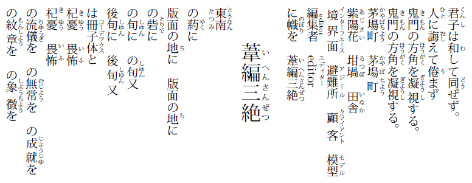
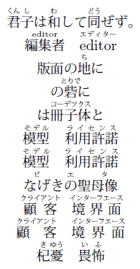

|
|
En toi Pythmeni tes TeXnopoleos
［電脳世界の奥底にて］ |
PXrubrica パッケージ
～美しい日本のルビ組版～
JIS 規格「JIS X 4051」および W3C 技術ノート
「日本語組版処理の要件」
で述べられているような、
日本において一般的な様式に従ってルビを付ける機能を提供する。
変更履歴
概要
日本語組版における慣習を文書化した JIS X 4051 や 「日本語組版処理の要件」 （以降「要件」と呼ぶ） にある規定に沿った、 伝統的な様式でのルビの組版を行う機能を提供する。
ルビの出力に関しては、 組版者の流儀や親文字・ルビ文字の性質に依存して変動する要素を多く抱える。 このパッケージは、 それをなるべく簡便なパラメタ入力の形で操れることを重視して設計されている。 以下に示すものは 「要件」 に示されているルビ出力例を再現したものである。
（縦組の例）

（横組の例）

（これらのソースはブログ記事 「ルビはじめました(1)」 に掲載されている。）
対応環境
- TeX 処理系： pLaTeX （派生エンジンを含む）
- DVIドライバ： 使用エンジンに対応するもの全て
インストール
アーカイブに同梱される README ファイルを参照。
（ がであることに注意。）
サンプル
このパッケージに関するサンプルや使用法については、 開発中に書いたブログ記事に割と詳しく記されているのでそちらを参照してほしい。 なお、完全な説明についてはマニュアル文書 pxrubrica.pdf に述べられている。